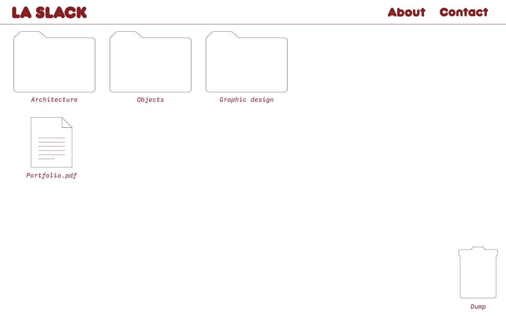

La Slack
Un portfolio pensé comme un bureau virtuel : architecture, objets et design graphique rangés comme des dossiers qu'on ouvre et qu'on explore.
Ce qu'on a fait
- Concept de navigation « bureau virtuel » et direction artistique
- Design d'interface ludique, pensé pour l'exploration
- Développement sur mesure, interactions et micro-animations
- Optimisation des performances et adaptation mobile